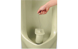
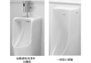

2023年
問題136 小便器に関する次の記述のうち，最も不適当なものはどれか．
（1）壁掛型は，駅やホテルの共用部などにおいて床清掃のしやすさから選定されている．
（2）床置型は，洗浄画が広いため，その洗浄に注意しないと臭気が発散する．
（3）小便器のリップの高さとは，床面からあふれ縁までの垂直距離をいう．
（4）自動感知洗浄弁には，便器分離型と便器一体型がある．
（5）使用頻度の高い公衆便所用小便器の排水トラップは，小便器一体のものが適している．
2023年
問題136 正解（5） 頻出度AAA
使用頻度の高い公衆便所用小便器の排水トラップは，取り外して清掃できる，目皿がわんトラップとなった脱着式のものが適している（2023-136-1図参照）．
2023-136-1図 小便器の脱着式排水トラップ

出典 モノタロウ（メーカーTOTO）
https://www.monotaro.com/g/00531818/#
-(1) ，-(2) ，-(3) 壁掛型小便器，床置型小便器，リップ高さ，2023-136-2図，2023-136-3図参照．
2023-136-2図 壁掛型小便器
2023-136-3図 床置型小便器
-(4) 小便器の自動感知洗浄弁2023-136-4図参照．
2023-136-4図 小便器の自動感知洗浄弁

出典 TOTO
hhttps://jp.toto.com/products/